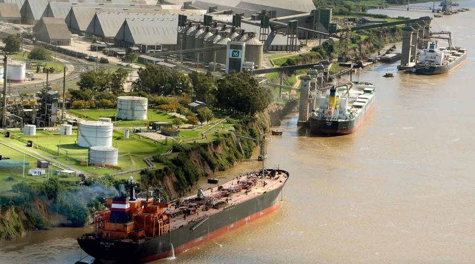

History of the City
Rosario was founded on October 3, 1793, by Francisco de Paula Sanz, who named the new settlement "Villa del Rosario." It was established as a strategic point for military and commercial activities, and its growth was fueled by the expansion of agriculture and trade in the region. During the 19th century, Rosario became an important center for the production and export of wheat and other agricultural products. The construction of the railroad in the mid-1800s helped to facilitate the transportation of goods and people, and the city continued to grow rapidly.

The city also played a key role in the labor movement in Argentina, with many workers organizing strikes and protests to demand better wages and working conditions. Rosario was also the birthplace of several important Argentine political figures, including the socialist leader Juan B. Justo and the revolutionary Che Guevara. In more recent years, Rosario has experienced periods of economic growth and decline, but it remains an important center for commerce, education, and culture in Argentina. Today, it is known for its vibrant arts scene, its historic landmarks, and its bustling port on the Paraná River, which connects it to other cities in Argentina and beyond.
